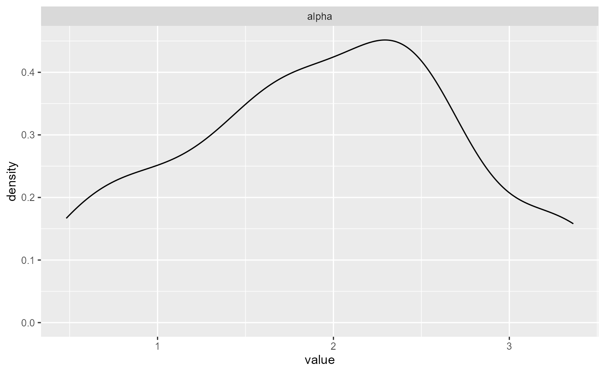

Overview
This vignette shows the core workflow end-to-end:
- Build a bundle
- Run MCMC
- Summarize and plot
- Predict density, survival, and quantiles
We show both SB and CRP backends, then show what changes when
GPD = TRUE.
Data
library(DPmixGPD)
library(nimble)
use_cached_fit <- TRUE
.fit_path <- function(name) {
path <- system.file("extdata", name, package = "DPmixGPD")
if (path == "") path <- file.path("inst", "extdata", name)
path
}
fit_small <- readRDS(.fit_path("fit_small.rds"))
fit_small_crp <- readRDS(.fit_path("fit_small_crp.rds"))
set.seed(1)
N <- 60
y <- abs(rnorm(N)) + 0.1Stick-breaking (SB) backend
bundle_sb <- build_nimble_bundle(
y = y,
backend = "sb",
kernel = "normal",
GPD = FALSE,
J = 8,
mcmc = list(niter = 200, nburnin = 50, thin = 1, nchains = 1, seed = 1)
)
if (use_cached_fit) {
fit_sb <- fit_small
} else {
fit_sb <- run_mcmc_bundle_manual(bundle_sb, show_progress = FALSE)
}
summary(fit_sb)
#> MixGPD summary | backend: Stick-Breaking Process | kernel: Normal Distribution | GPD tail: FALSE | epsilon: 0.025
#> n = 80 | components = 3
#> Summary
#> Initial components: 3 | Components after truncation: 3
#>
#> Summary table
#> parameter mean sd q0.025 q0.500 q0.975 ess
#> weights[1] 0.638 0.081 0.524 0.625 0.775 3.535
#> weights[2] 0.211 0.033 0.150 0.212 0.251 8.389
#> weights[3] 0.154 0.055 0.049 0.162 0.225 3.421
#> alpha 1.945 0.818 0.575 1.904 3.341 13.115
#> mean[1] 1.150 0.154 0.876 1.144 1.404 9.376
#> mean[2] 5.956 3.400 2.343 6.970 11.420 15.873
#> mean[3] 6.067 3.332 2.530 3.815 11.671 13.235
#> sd[1] 3.027 1.226 1.385 2.780 5.462 8.118
#> sd[2] 1.110 1.316 0.023 0.059 3.947 3.470
#> sd[3] 1.356 1.652 0.029 0.587 5.270 15.139A quick diagnostic plot (one panel):
plots <- plot(fit_sb, family = "density", params = "alpha")
plots[[1]]
Prediction (SB)
y_grid <- seq(min(y), max(y), length.out = 50)
pr_den <- predict(fit_sb, type = "density", y = y_grid)
pr_surv <- predict(fit_sb, type = "survival", y = y_grid)
pr_q <- predict(fit_sb, type = "quantile", p = c(0.5, 0.9))
head(pr_den$fit)
#> [,1] [,2] [,3] [,4] [,5] [,6] [,7]
#> [1,] 0.1004133 0.1016668 0.1029019 0.1041171 0.1053108 0.1064815 0.1076276
#> [,8] [,9] [,10] [,11] [,12] [,13] [,14]
#> [1,] 0.1087476 0.1098401 0.1109036 0.1119365 0.1129377 0.1139056 0.1148391
#> [,15] [,16] [,17] [,18] [,19] [,20] [,21]
#> [1,] 0.1157368 0.1165975 0.1174201 0.1182035 0.1189466 0.1196486 0.1203085
#> [,22] [,23] [,24] [,25] [,26] [,27] [,28]
#> [1,] 0.1209254 0.1214988 0.1220278 0.1225119 0.1229506 0.1233434 0.1236901
#> [,29] [,30] [,31] [,32] [,33] [,34] [,35]
#> [1,] 0.1239903 0.1242438 0.1244505 0.1246105 0.1247237 0.1247903 0.1248104
#> [,36] [,37] [,38] [,39] [,40] [,41] [,42]
#> [1,] 0.1247842 0.1247122 0.1245945 0.1244316 0.1242239 0.1239719 0.123676
#> [,43] [,44] [,45] [,46] [,47] [,48] [,49]
#> [1,] 0.1233367 0.1229544 0.1225297 0.1220629 0.1215546 0.121005 0.1204147
#> [,50]
#> [1,] 0.119784
pr_q$fit
#> [,1] [,2]
#> [1,] 2.444721 9.102755CRP backend
bundle_crp <- build_nimble_bundle(
y = y,
backend = "crp",
kernel = "normal",
GPD = FALSE,
J = 8,
mcmc = list(niter = 200, nburnin = 50, thin = 1, nchains = 1, seed = 1)
)
if (use_cached_fit) {
fit_crp <- fit_small_crp
} else {
fit_crp <- run_mcmc_bundle_manual(bundle_crp, show_progress = FALSE)
}
summary(fit_crp)
#> MixGPD summary | backend: Chinese Restaurant Process | kernel: Normal Distribution | GPD tail: FALSE | epsilon: 0.025
#> n = 80 | components = 3
#> Summary
#> Initial components: 3 | Components after truncation: 3
#>
#> Summary table
#> parameter mean sd q0.025 q0.500 q0.975 ess
#> weights[1] 0.542 0.055 0.462 0.537 0.663 7.671
#> weights[2] 0.344 0.068 0.262 0.325 0.475 3.588
#> weights[3] 0.175 0.033 0.102 0.175 0.217 13.487
#> alpha 0.540 0.285 0.138 0.491 1.167 40.000
#> mean[1] 1.092 0.153 0.852 1.094 1.325 5.262
#> mean[2] 6.729 1.203 4.726 6.919 8.907 18.225
#> mean[3] 2.983 0.288 2.596 2.953 3.557 10.855
#> sd[1] 2.585 0.810 1.137 2.579 4.132 22.478
#> sd[2] 0.053 0.015 0.028 0.049 0.080 40.000
#> sd[3] 1.692 0.441 0.998 1.611 2.517 12.295Compare SB vs CRP median predictions:
q_sb <- predict(fit_sb, type = "quantile", p = 0.5)$fit[1, 1]
q_crp <- predict(fit_crp, type = "quantile", p = 0.5)$fit[1, 1]
data.frame(backend = c("sb", "crp"), q50 = c(q_sb, q_crp))
#> backend q50
#> 1 sb 2.444721
#> 2 crp 3.316207Turning on the GPD tail
bundle_gpd <- build_nimble_bundle(
y = y,
backend = "sb",
kernel = "normal",
GPD = TRUE,
J = 8,
mcmc = list(niter = 200, nburnin = 50, thin = 1, nchains = 1, seed = 2)
)
if (use_cached_fit) {
fit_gpd <- fit_small
} else {
fit_gpd <- run_mcmc_bundle_manual(bundle_gpd, show_progress = FALSE)
}
q_off <- predict(fit_sb, type = "quantile", p = 0.99)$fit[1, 1]
q_on <- predict(fit_gpd, type = "quantile", p = 0.99)$fit[1, 1]
data.frame(model = c("GPD=FALSE", "GPD=TRUE"), q99 = c(q_off, q_on))
#> model q99
#> 1 GPD=FALSE 10.1547
#> 2 GPD=TRUE 10.1547With GPD = TRUE, high quantiles typically increase
because the tail is modeled explicitly rather than extrapolated from the
bulk mixture.